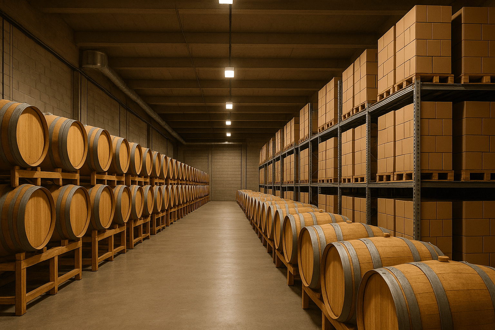
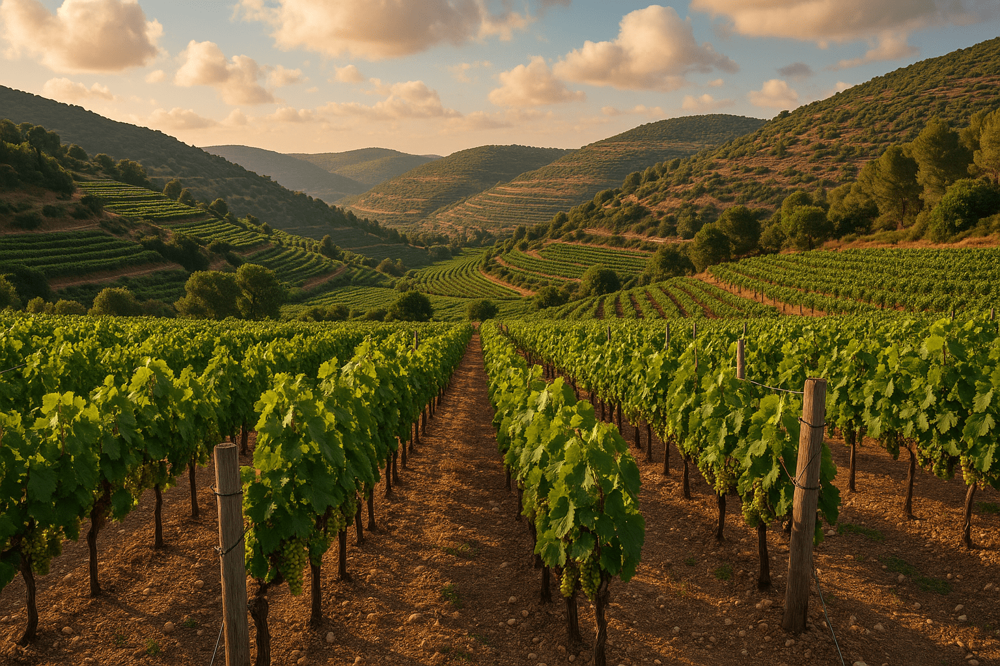
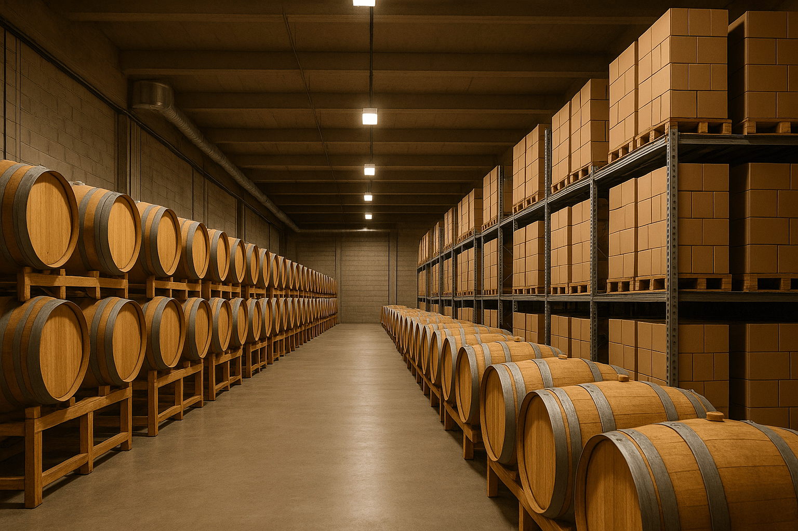
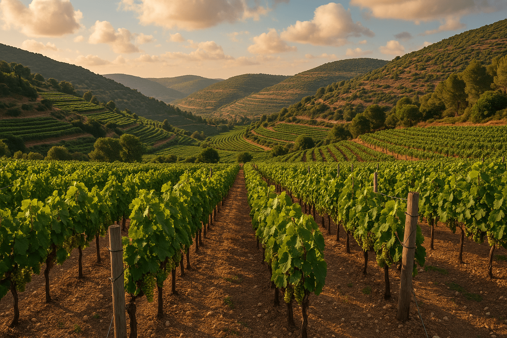

סיפור היין שלנו
בלי סיסמאות ובלי פילוסופיות — היין שלנו מתחיל בכרמים שנמצאים במפגש בין אדמה גירית לרוח קרירה מהערב. הענבים נבצרים לפנות בוקר, כשהטמפרטורה עדיין נמוכה, כדי לשמור על רעננות טבעית ועל ריכוז מדויק של סוכר וחומצה.
אחרי הבציר, האשכולות נכנסים למיון כפול: מיון ידני ראשוני בכרם ולאחר מכן מיון קפדני ביקב. כל זן עובר תסיסה נפרדת במכלי נירוסטה או בחביות פתוחות, בהתאם לפרופיל הארומטי שרוצים לבנות. בשלב הזה נוצרים הטעמים הראשונים: פרי שחור עמוק בזנים האדומים, פרי הדר ותפוח ירוק בזנים הלבנים.
מקור הטעם מגיע משלושה גורמים עיקריים: אזור הגידול, משך היישון והחבית. קרקע עשירה במינרלים מעניקה תחושה יבשה ומדויקת, יישון על שמרים עדינים מוסיף עומק, והחבית תורמת שכבות של וניל, קקאו ותבלין עדין. כך מתקבל יין שיש לו איזון בין פרי טרי לבין מורכבות בשלה.
בפה, המרקם משתנה מבקבוק לבקבוק: יש יינות עם גוף בינוני ומגע משיי, ויש כאלה עם גוף מלא וטאנין מודגש שמחזיק סיומת ארוכה. אנחנו מקפידים שכל יין יקבל תיאור ברור באתר — מה מריחים, מה טועמים, עם איזה אוכל הוא עובד הכי טוב, ובאיזו טמפרטורה להגיש אותו כדי להוציא את המקסימום.
 


